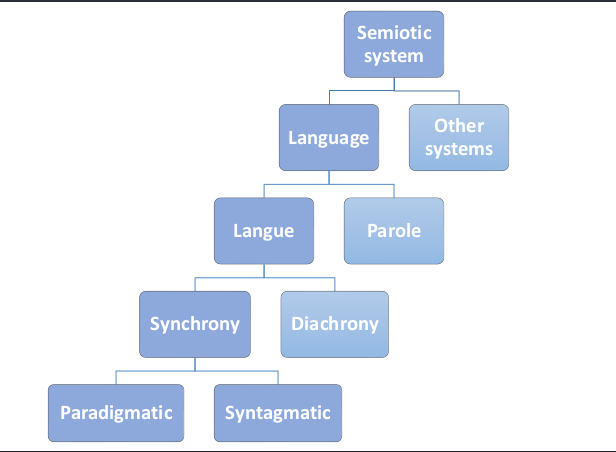

[TIL017] 인공지능과 언어학 모두 feature가 중요하다.
Contents
Today I Learned…
- 문법론
- 현대언어학은
feature를 중심으로 구성된다.- 인공지능의 학습 데이터 역시
feature를 잘 설정하는 것이 중요하다!
- 인공지능의 학습 데이터 역시
- 현대언어학은
- 기호학.
- 소쉬르 언어사상 전반에 대해 배웠다.
 - 소쉬르는 기호체계의 일부로서 언어학을 이해했다. (↔ 당시 주류였던 역사비교언어학)
랑그vs.파롤: 파롤은 개별적인 언어 발화를, 랑그는 언어 체계를 뜻한다.- 따라서 언어학의 연구 대상은 체계로서 랑그이며, 파롤은 개별 언어자료로서 그 가치를 지닌다.
기의(시니피에)vs.기표(시니피앙): 기의는 내포하고있는 의미, 기표는 그러한 의미를 담아 외연되는 기호.- 이때, 기호는 청각영상(acoustic image, 음운?), 문자언어 등등으로 나타날 수 있다.
arbitraryvsmotivated: 기의와 기표간의 관계는 본질적으로는 자의적이나, 이 역시 기호들간의 관계 속에서 생각할 때 상대적으로 덜 자의적이거나, 더 자의적인 것들이 있다. 곧, 기의와 기표간의 관계는relatively arbitrary하다.- 언어는 자의적이기에 가변하지만, 동시에 자의적이기에 한번 정해지면 잘 변하지 않는 불변성 역시 띈다. (어차피 자의적이라면, 굳이 언어 표현을 바꿀 이유가 없다!)
기호의 의미는 외부의 대상과 연결되어 발생하는 것이 아니라, 구조 내부의 관계 속에서 발생한다. (구조주의)
- 물론 기호 그 자체는 외부의 대상을 지시하고 재현한다. 그러나, 그 의미는 외부의 대상에 의해서 정의되는 것이 아니라 다른 기호들간의 관계속에서 부정적, 소극적으로 발생한다.
- 공시태 vs. 통시태
- 통합관계 vs. 계열관계: 하나를 선택함으로써 연쇄되어 선택되거나, 배제되거나.
- 소쉬르 언어사상 전반에 대해 배웠다.
- 인공지능
- 인공지능은 두 가지 영역의 교집합이다.
- 인간의 지능에 대한 연구: 언어학, 심리학, 철학(기호논리학), 신경과학 등등…
- 컴퓨터과학에서 알고리즘에 대한 연구
- 기존의 알고리즘으로 해결하지 못하는 문제들이 있다.
- 복잡도가 너무 커서, 해결책을 알아도 실질적으로 해결할 수 없는 경우 (ex. Traveling salesman Problem)
- 아예 알고리즘을 어떻게 짜야할지도 모르는 경우 (ex. 자연어처리, 컴퓨터비전)
컴퓨터 과학 알고리즘의 연구의 관점에서, 일반적인 알고리즘과 인공지능 알고리즘은 무슨 차이가 있는가?
- 전통적인 알고리즘은 인풋에 대하여 항상 정해지고 예측가능한 아웃풋을 내놓는 반면, 인공지능의 알고리즘은 보통 최적화 알고리즘으로서 정확한 답을 내놓을 확률만 있을 뿐, 그 아웃풋의 신뢰성이 보장되지 않는다!
- 기존의 알고리즘으로 해결하지 못하는 문제들이 있다.
- 인공지능의 정의 (by Russel)
- 논문이랑 책 조금 더 읽어보자…
- 인공지능은 두 가지 영역의 교집합이다.
Today I Did…
- 샐러드 구독. 끼니당 5000원…채소값은 비싸다.
Today I Thought & Felt…
- 삶의 올바른 방향성은 존재하는가?